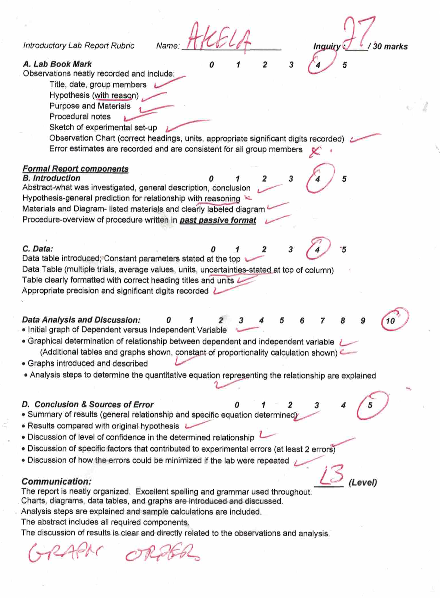

The marks my physics teacher gave
A few weeks ago I posted my grade 12 physics introductory lab. When I got it back yesterday I was shocked to see my low grade in the communication category.
It turns out that stapling my graphs (which had to be hand-drawn for this assignment) at the end of my lab brought my communication mark to a level 3, which in Ontario is roughly equivalent to a 75%. When asked about this mark, my teacher Mr. Nestor, of Louise Arbour Secondary School, confirmed that this was the only thing that needed fixing and explained the crucial importance of including the graphs in the body of the lab. He refused to change my mark to a 4- (low 80s). Mr. Nestor told me that a mark like this helped get students to recognize errors and correct them in future labs.
{kind=link}
I take objection to this mark. First of all, I’ve fulfilled every other criteria under communication at a level 4 standard (he hasn’t told me otherwise): I’ve taken pains to proofread my work for excellent spelling and grammar, I’ve introduced and discussed all my graphs and data tables, I’ve explained my analysis and shown sample calculations, I’ve completed an abstract with all required components, and I’ve discussed my results clearly in a way that relates to the observations and analysis. With so many things done right, a level 4- (which I suggested to Mr. Nestor) is clearly a fairer mark. The issue of graph order really only falls under, “The report is neatly organized” in the rubric. My report, save for the graph order, even is neatly organized: it’s got all the required headings, uses an appropriate font, has a title page, has titled and numbered figures and graphs, and even has equations with vertically aligned equal signs. Besides, having the hand-drawn graphs sandwiched in my printed lab will arguably make the report less neatly organized. If the graphs were to be done digitally, there would be no question that inserting them near where they are discussed in the lab is most appropriate. For this assignment, however, Mr. Nestor, said that there is no need to scan or take pictures of the hand-drawn graphs to insert them into the lab. Grouping the graphs all in one place at the end of the stapled lab is sensible. This arrangement doesn’t cut the report text and the graphs are easy to flip to. If this report was turned into a booklet, the reader could see two pages of the report at once instead of a page with text and a blank page (the backside of a hand drawn graph). Of course no fool who writes a lab report more than several sheets long or a lab report with digital graphs will put the graphs at the end.
I appreciate the more informed judgement of my former physics teacher, Ms. Ryan, who did not take away marks for stapling the graph at the end of my Grade 11 lab report on Ohm’s law. If Mr. Nestor continues to find hand-drawn graph placement a concern for students, he should mention it in class and state the requirement more explicitly in the rubric because it is by no means obvious that hand-drawn graphs need to be sandwiched in a three-page lab report (which may involve altering the page number in the report’s headers), and students should not suffer a 25% mark drop in communication for this.
Other sources of lost marks are not stating the uncertainties at the top of data table columns, not agreeing upon an uncertainty of a measurement with group members, and not providing (adequate) reasoning for my hypothesis. I’ll leave these interesting stories for another day.